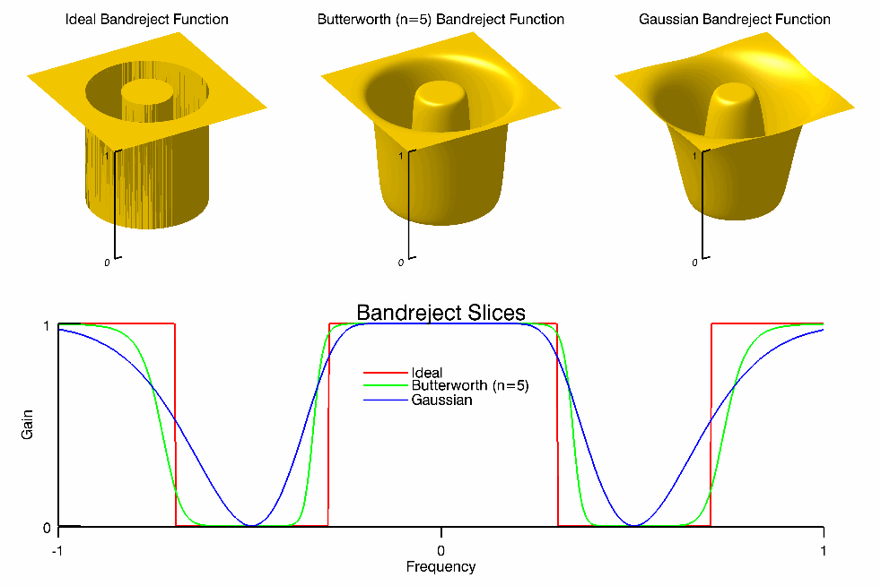
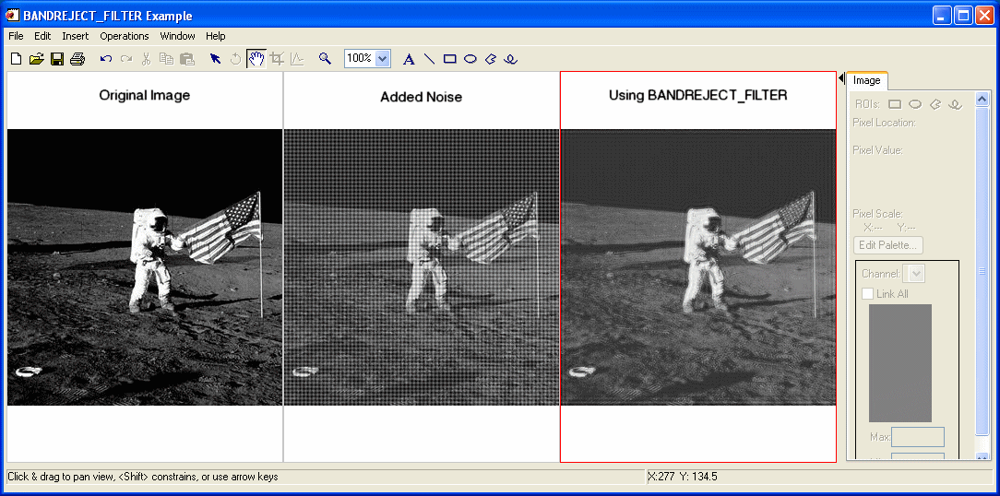

The BANDREJECT_FILTER function applies a band reject filter on a one-channel image.
A band reject filter is useful when the general location of the noise in the frequency domain is known. A band reject filter blocks frequencies within the chosen range and lets frequencies outside of the range pass through.
The following diagrams give a visual interpretation of the transfer functions:

This routine is written in the IDL language. Its source code can be found in the file bandreject_filter.pro in the lib subdirectory of the IDL distribution.
Result = BANDREJECT_FILTER( ImageData , LowFreq , HighFreq [, / IDEAL ] [, BUTTERWORTH = value ] [, / GAUSSIAN ] )
Returns a filtered image array of the same dimensions and type as ImageData .
A two-dimensional array containing the pixel values of the input image.
The lower limit of the cutoff frequency band. This value should be between 0 and 1 (inclusive), and must be less than HighFreq .
The upper limit of the cutoff frequency band. This value should be between 0 and 1 (inclusive), and must be greater than LowFreq .
Set this keyword to use an ideal band reject filter. In this type of filter, frequencies outside of the given range are passed without attenuation and frequencies inside of the given range are blocked. This behavior makes ideal band reject filters very sharp.
In the previous diagram, the centered Fast Fourier Transform (FFT) is filtered by the following function, where D L is the lower bound of the frequency band, D H is the upper bound of the frequency band, and D(u,v) is the distance between a point (u,v) in the frequency domain and the center of the frequency rectangle:
Set this keyword to the dimension of the Butterworth filter to apply to the frequency domain. With a Butterworth band reject filter, frequencies at the center of the frequency band are completely blocked and frequencies at the edge of the band are attenuated by a fraction of the maximum value. The Butterworth filter does not have any sharp discontinuities between passed and filtered frequencies.
Note: A low Butterworth dimension is close to Gaussian, and a high Butterworth dimension is close to Ideal.
In the previous diagram, the centered FFT is filtered by the following function, where D 0 is the center of the frequency band, W is the width of the frequency band, D(u,v) is the distance between a point (u,v) in the frequency domain and the center of the frequency rectangle, and n is the dimension of the Butterworth filter:
Note: As n > ∞, the Butterworth filter approaches the Ideal filter.
Set this keyword to use a Gaussian band reject filter. In this type of filter, the transition between unfiltered and filtered frequencies is very smooth.
In the previous diagram, the centered FFT is filtered by the following function, where D 0 is the center of the frequency band, W is the width of the frequency band, and D(u,v) is the distance between a point (u,v) in the frequency domain and the center of the frequency rectangle:
In the following example, we add some sinusoidal noise to an image and filter it with BANDREJECT_FILTER.
; Read in the file
file = FILEPATH('moon_landing.png', SUBDIR=['examples','data'])
imageOriginal = READ_PNG(file)
; Generate some sinusoidal noise.
xCoords = LINDGEN(300,300) MOD 300
yCoords = TRANSPOSE(xCoords)
noise = -SIN(xCoords*1.5)-SIN(yCoords*1.5)
imageNoise = imageOriginal + 50*noise
; Filter the noise with a band reject filter
imageFiltered = BANDREJECT_FILTER(imageNoise, 0.28, 0.38)
; Find the image dimensions so we can display three of them
; side by side in an iImage iTool
dims = [(SIZE(imageOriginal))[1]*3, $
(SIZE(imageOriginal))[2]*1+120]
; Display the original, noise-added, and filtered images
IIMAGE, imageOriginal, VIEW_GRID=[3,1], $
VIEW_TITLE='Original Image', $
DIMENSIONS=dims, WINDOW_TITLE='BANDREJECT_FILTER Example', $
/NO_SAVEPROMPT
IIMAGE, imageNoise, /VIEW_NEXT, VIEW_TITLE='Added Noise'
IIMAGE, imageFiltered, /VIEW_NEXT, $
VIEW_TITLE='Using BANDREJECT_FILTER'
; Increase the text size
ISETPROPERTY, 'text*', FONT_SIZE=36

Filtered Image using BANDREJECT_FILTER
|
7.1 |
Introduced |
MEAN_FILTER , ESTIMATOR_FILTER , BANDPASS_FILTER , WIENER_FILTER , LEAST_SQUARES_FILTER